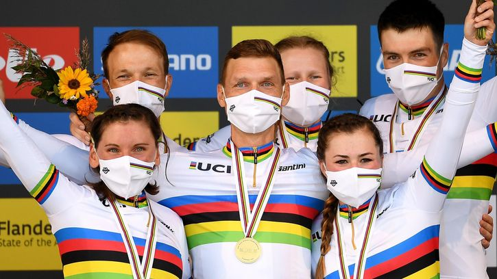
13 hours ago
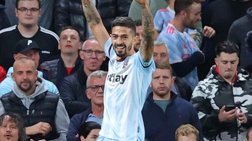
10 hours ago
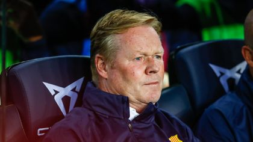
an hour ago
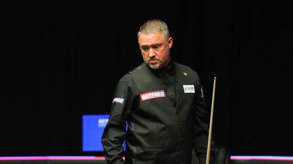
11 hours ago
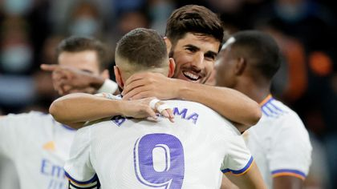
8 hours ago
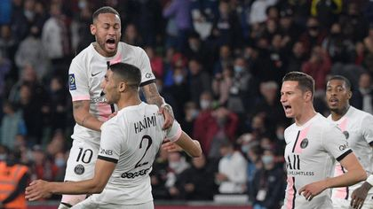
9 hours ago
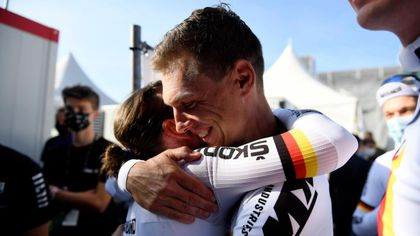
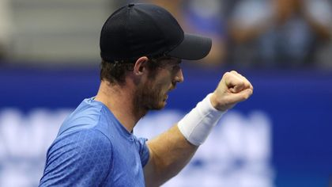
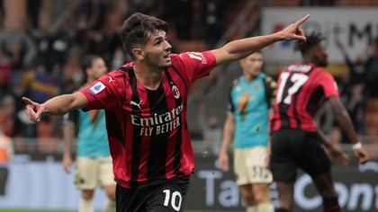
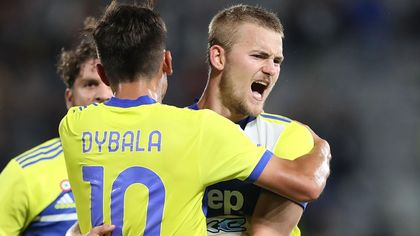
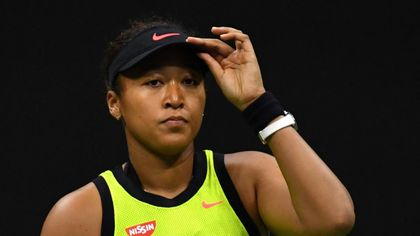
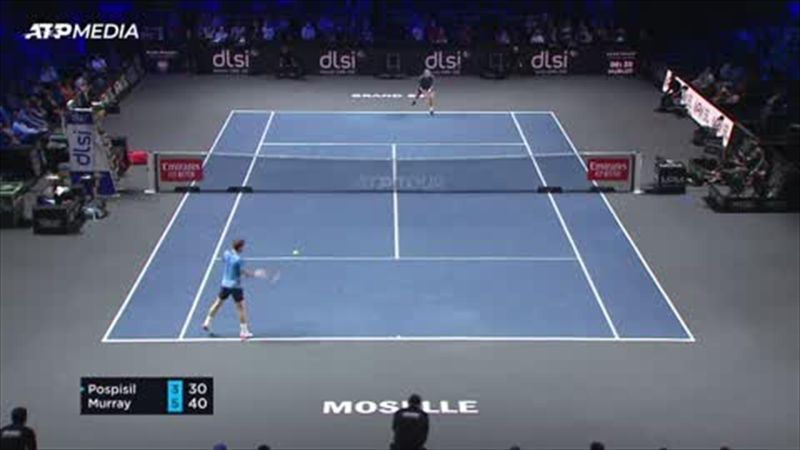
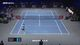
00:01:05
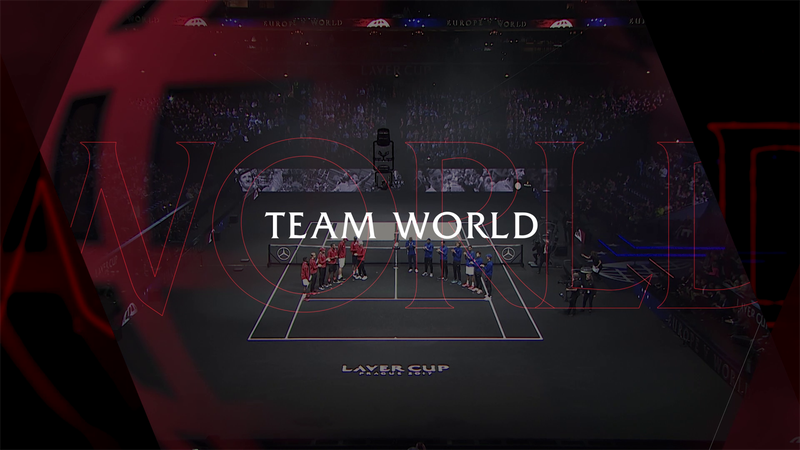
00:01:00
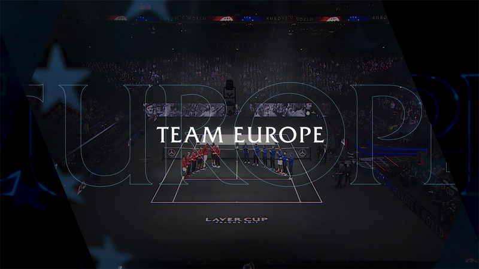
00:00:57
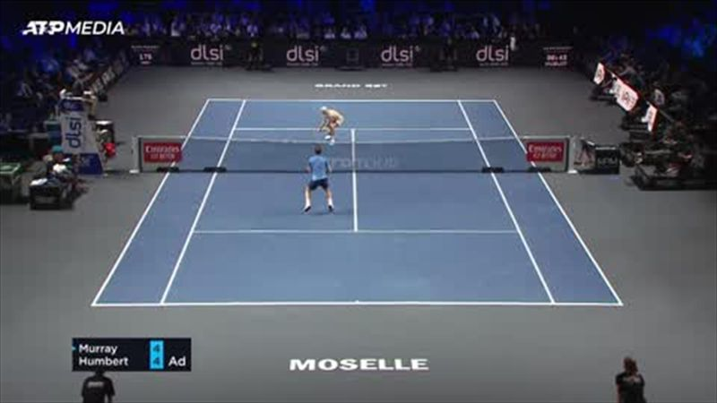
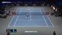
00:01:10
00:02:03
00:00:29
00:00:36
00:00:54
00:01:06
00:02:09
00:01:58
00:06:06
00:02:58
00:02:11
00:02:08
00:01:48
00:02:36
00:03:03
00:02:00
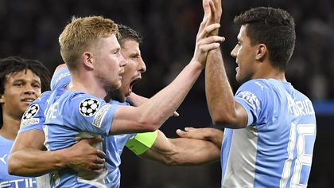
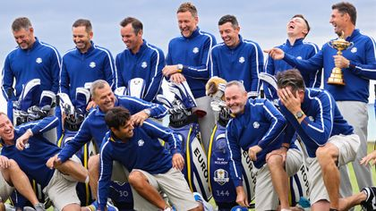
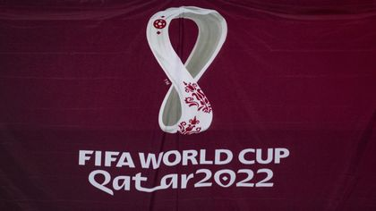
14 hours ago
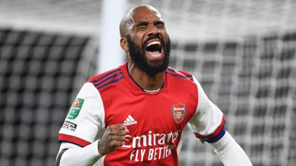
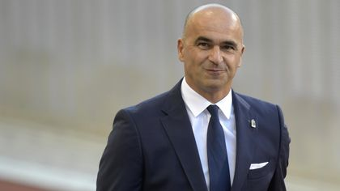
17 hours ago
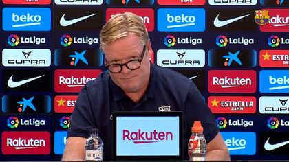
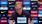
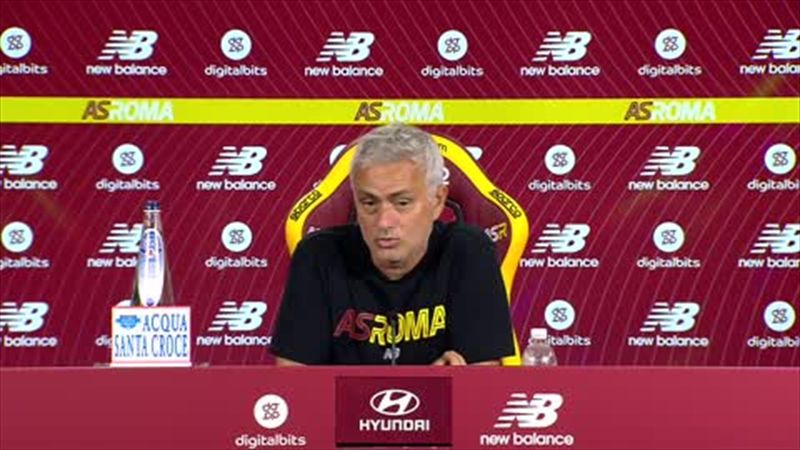
00:01:29
00:01:37
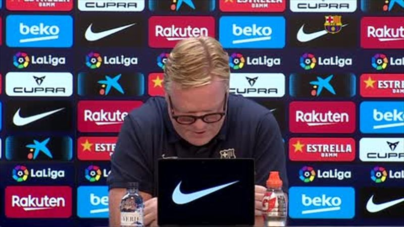
00:01:42
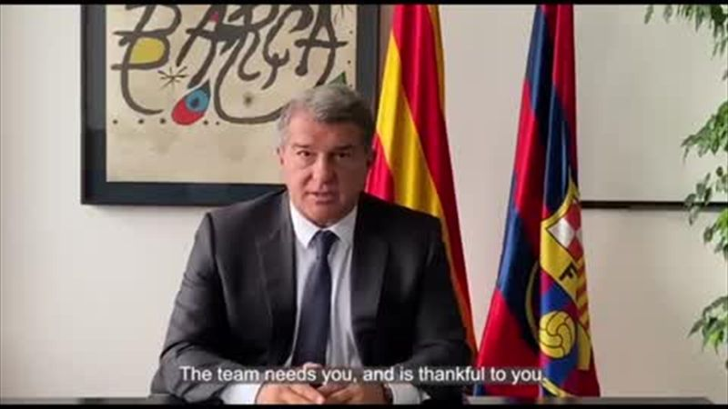
00:00:48
00:02:10
00:01:07
00:00:50
00:01:50
00:01:39
00:01:12
00:00:59
00:01:31
00:01:53
00:01:15
00:01:40
00:01:24
00:01:02
00:01:28
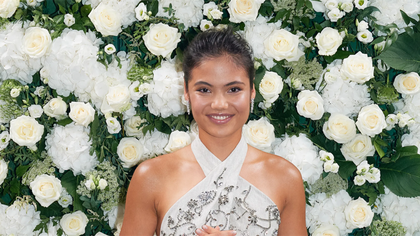
a day ago
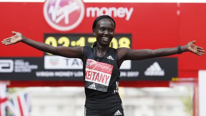
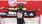
16 hours ago
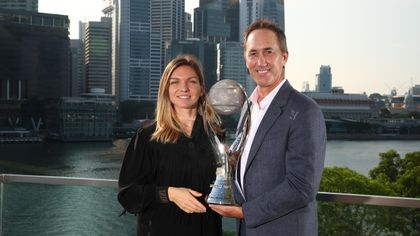
19 hours ago
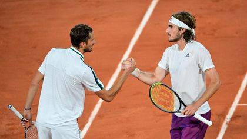
21 hours ago
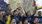
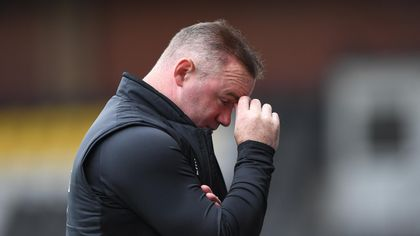
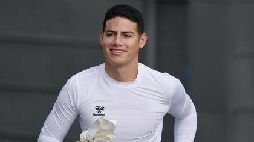
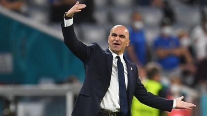
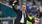
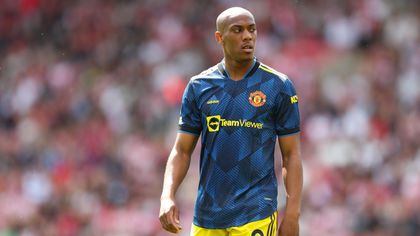
Yesterday at 06:08
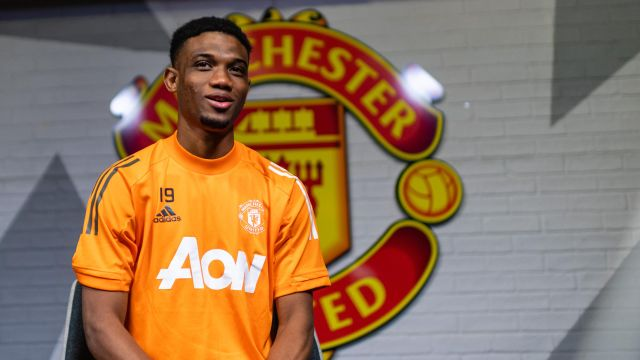
02/02/2021 at 14:59
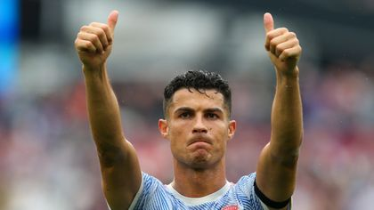
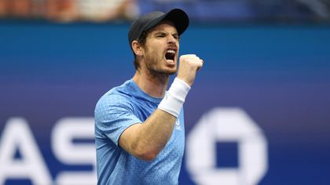
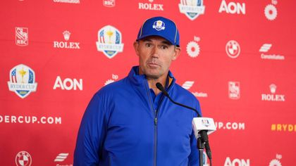
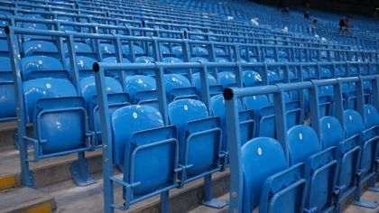
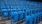
18 hours ago
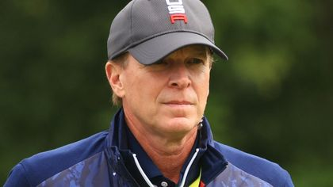
15 hours ago
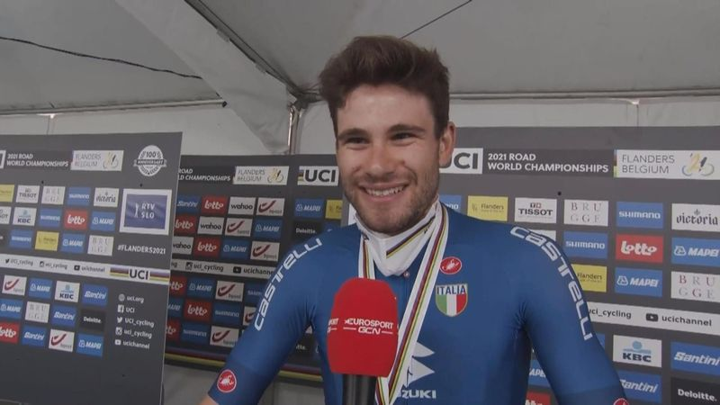
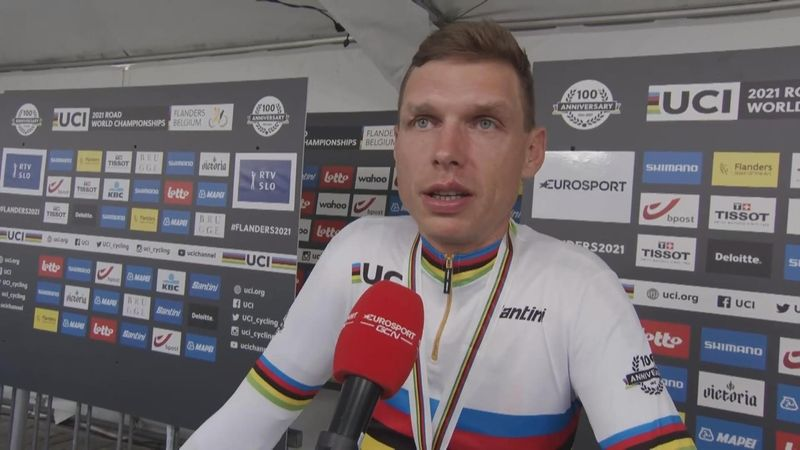
00:01:45
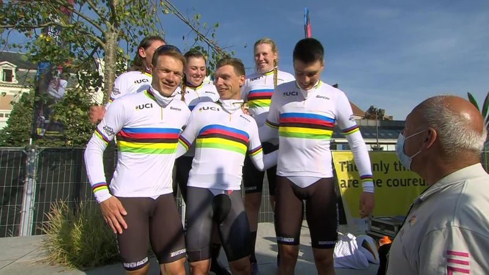
00:03:02
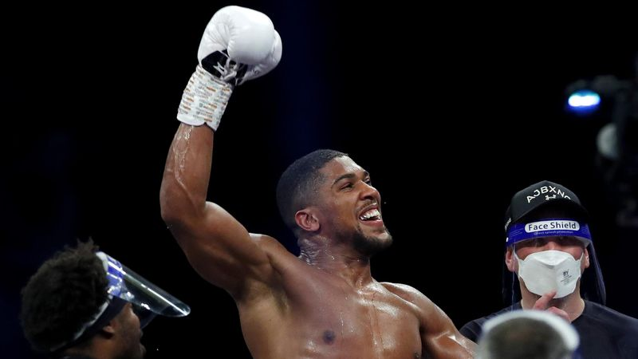
00:03:52
00:05:24
00:01:19
00:00:38
00:01:23
00:01:16
00:00:55
00:05:05
00:04:52
00:00:47
00:00:32
00:03:23
00:02:07
00:04:51
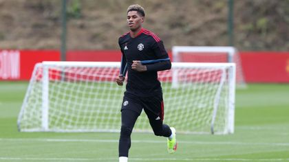
20 hours ago
00:00:15
00:02:45
00:02:05
00:02:15
00:06:29
00:02:19
00:05:25
00:03:12
00:07:10
00:11:33
00:00:49
00:02:24
00:03:50
00:00:37
00:00:31
Yesterday at 18:39
Yesterday at 17:37
Yesterday at 13:50
Yesterday at 15:00
00:02:29
Yesterday at 11:12
00:01:25
00:01:34
00:01:54
00:01:20
00:01:33
00:01:35
00:01:43
00:01:30
00:01:41
Yesterday at 14:37
Yesterday at 16:56
Yesterday at 16:25
Yesterday at 17:20
00:04:30
00:03:59
00:03:08
00:03:15
00:01:01
00:02:30
00:03:28
00:04:43
00:03:20
00:05:30
00:04:26
00:04:49
00:04:33
00:03:29
00:04:06
00:04:05
Yesterday at 16:58
Yesterday at 07:51
Yesterday at 11:06
Yesterday at 10:22
Yesterday at 19:16
Yesterday at 10:25
Yesterday at 13:31
00:02:23
Yesterday at 04:29
Yesterday at 13:20